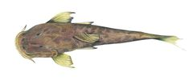
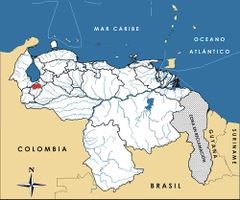

Astroblepus orientalis
| Babosito del Albarregas | |
|---|---|
|  | |
| Riesgo de extinción | |
 En peligro (UICN) | |
| Clasificación científica | |
| Reino: | Animalia |
| Filo: | Chordata |
| Clase: | Actinopterygii |
| Orden: | Siluriformes |
| Familia: | Astroblepidae |
| Género: | Astroblepus |
| Especie: | Astroblepus orientalis |
| Nombre binomial | |
|
Astroblepus orientalis Boulenger, 1903 | |
| Distribución | |
|
 Mapa de distribución de Astroblepus orientalis | |
Contenido
Información de Evaluación
- Categoría y Criterio Regional: En Peligro B1ab(iii)
- Fecha de Evaluación Regional: 2015
- Evaluadores: Jesús Morales-Campos y Ariany García-Rawlins
- Categoría y Criterio Global: No Evaluado
Justificación
Evaluaciones Previas
1999: No Evaluado (NE)
2008: En Peligro (EN)
Información General
Nombres comunes
Babosito del Albarregas, babosito de Las González, Albarregas catfish, Albarregas naked sucker-mouth catfish, climbing catfish.
Notas taxonómicas
Sinónimos
Descripción
Pez pequeño que mide hasta 10 cm de longitud total. Su cuerpo es alargado y desprovisto de escamas, de color crema moteado con manchas difusas marrones oscuras (Schultz 1944a). Tiene la cabeza deprimida y la boca en posición ventral en forma de ventosa. Pertenece a un género cuyos miembros presentan una gran variabilidad en cuanto a su morfología, lo que hace difícil su separación y clasificación. Por ejemplo, hay poblaciones de especies no identificadas, en extremo versátiles, como las de la cuenca alta del río Uribante, para las cuales se han mencionado ocho morfotipos diferentes, lo que probablemente indica la presencia de un complejo de astroblépidos (Péfaur 1987, 1988, Palencia 1988a, 1988b).
Distribución
Es endémica de los Andes de Venezuela, restringida a la región merideña. Se consigue en las aguas que drenan desde la sierra de La Culata hacia el Chama, en los ríos Albarregas, Milla y Las González, entre 500 y 3500 m de altitud, en el estado Mérida (Schultz 1944a). Habita en cuevas, debajo de piedras o troncos y entre la vegetación ribereña.
- Sistema: Dulceacuícola
- Bioregión:
- Intervalo altitudinal (m): 500-3500
- Endémica: Sí
Situación
Astroblepus orientalis presenta una distribución geográfica muy limitada, menor que 5000 km2. Su tamaño poblacional es bastante bajo, lo cual se pone en evidencia ante su aparición muy esporádica en los esfuerzos sistemáticos de colección realizados. Asimismo, su hábitat natural está profundamente alterado debido a la contaminación, destrucción de la vegetación ribereña e introducción de especies exóticas; este último aspecto se ha identificado como la causa más importante y más relacionada con la situación de amenaza que enfrenta. Es así como obligatoriamente debe clasificarse En Peligro, debido a que su estado es crítico y amerita acciones urgentes.
- EOO (km2): <5000
- AOO (km2): Temporalmente sin información
- Tendencia Poblacional: Desconocida
Amenazas
La distribución histórica del babosito del Albarregas abarcaba desde los 500 m (Estanques) hasta 3500 m (río Milla). Esto sugiere que una vez debieron existir peces autóctonos en lugares donde hoy día solo se consiguen truchas (Oncorchynchus mykiss), una especie voraz y agresiva introducida en las aguas andinas desde hace más de 60 años por el Ministerio de Agricultura y Cría (Péfaur y Sierra 1998). En otras palabras, la incorporación de este pez carnívoro exótico probablemente causó la disminución de comunidades nativas. Una segunda amenaza de importancia la constituye la pérdida de la calidad de las aguas y suelos altoandinos, por los pesticidas y fertilizantes utilizados en labores agrícolas y pecuarias. Debido a su distribución restringida y a que su tamaño no excede los 10 cm, carece de importancia económica, aunque podría tener potencial en acuariofilia u ornamentación, como todos los astroblépidos de la zona (Péfaur 1988).
Conservación
No existe ninguna medida específica de protección para esta especie. Una parte de su hábitat natural se localiza dentro del parque nacional Sierra de La Culata, en el estado Mérida. Los registros que se han obtenido del río Las González, corresponden a localidades relativamente bajas, alrededor de los 800 m cerca de su desembocadura en el Chama. Sin embargo, la parte alta de este curso, en el sector de sus chorreras o cascadas, corresponde a un monumento natural, figura conservacionista ambiental que no admite la más mínima modificación o intervención dentro de sus límites. Es de esperar que en esas partes existan contingentes reproductivos de Astroblepus orientalis, que pudieran conservar su patrimonio. Se sugiere realizar investigaciones sobre su biología y ecología, a objeto de estimar sus tamaños poblacionales así como precisar su estatus de conservación, que se presume muy próximo a la extinción. Los sectores de la cuenca de los ríos Albarregas y Milla que no alcanzan a estar dentro del parque mencionado, deberían preservarse como zonas protectoras de cuencas y fuentes de agua potable para la ciudad de Mérida, y por ende protectoras de fauna. Una de esas áreas es el bosque de monte Zerpa, donde ya ha ocurrido la extinción del sapito Atelopus oxyrhynchus (Péfaur y Rivero 2000). Una consideración especial por parte del Ministerio para la Agricultura y Tierras y del Instituto Nacional de Investigaciones Agrícolas (INIA), lograría establecer la presencia de especies autóctonas, antes de promover la introducción de alevines de truchas en los ríos andinos, a fin de prevenir la disminución o extinción poblacional de este y otros peces que viven en los cauces de los Andes venezolanos. Se amerita una pronta y profunda revisión del género a nivel taxonómico en toda la región, ya que podría tratarse de un complejo de especies amenazadas (Sette 1992).
Autorías
Autores originales
Jaime E. Péfaur e Isis Jaimez-Ruiz
Colaboradores
Ilustrador
Ximenamaria Rausseo
Referencias
- Palencia, P. (1988a). Abundancia y diversidad de la ictiofauna de la cuenca de los ríos Uribante y Doradas, Táchira, Venezuela. Trabajo especial de Grado, Universidad de Los Andes, Escuela de Biología, Facultad de Ciencias. 183 pp.
- Palencia, P. (1988b). "Abundancia y diversidad de la ictiofauna en la cuenca alta de los ríos Uribante y Doradas (Estado Táchira)." Memoria de la Sociedad de Ciencias Naturales La Salle 48(Supl.): 455-469.
- Péfaur, J. E. (1987). Fauna del Uribante. I. Estudio de la Ictiofauna de la Cuenca Uribante-Doradas. Convenio MARNR-CADAFE, Conservación de Cuencas. Uribante-Caparo. 168 pp.
- Péfaur, J. E. (1988). Catalogación económica de la ictiofauna alto-andina venezolana. Memoria de la Sociedad de Ciencias Naturales La Salle 48(Supl.): 471-492.
- Péfaur, J. E. y Jaimez-Ruiz, I. (2015). Babosito del Albarregas, Astroblepus orientalis. En: J.P. Rodríguez, A. García-Rawlins y F. Rojas-Suárez (eds.) Libro Rojo de la Fauna Venezolana. Cuarta edición. Provita y Fundación Empresas Polar, Caracas, Venezuela. Recuperado de: animalesamenazados.provita.org.ve/content/babosito-del-albarregas Vie, 20/04/2018 - 13:54
- Péfaur, J. E. y Rivero, J. A. (2000). Distribution, species-richness, endemism, and conservation of Venezuelan amphibians and reptiles. Amphibian and Reptile Conservation 2(2): 42-70.
- Péfaur, J. E. y Sierra, N. (1998). Distribución y densidad de la trucha Oncorhynchus mykiss (Salmoniformes: Salmonidae) en los Andes venezolanos. Revista de Biología Tropical 46(3): 775-782.
- Rodríguez, J. P. y Rojas-Suárez, F. (1999). Libro Rojo de la Fauna Venezolana, segunda edición. PROVITA, Fundación Polar. Caracas. 444 pp.
- Rodríguez, J. P. y Rojas-Suárez, F. (Eds.) (2008). Libro Rojo de la Fauna Venezolana, tercera edición. Provita y Shell Venezuela, S. A. Caracas, Venezuela. 364 pp.
- Schultz, L. P. (1944a). The catfishes of Venezuela, with descriptions of thirty-eight new forms. Proceedings of the United States National Museum 94(3172): 173-338
- Sette, S. (1992). Condiciones hidrográficas del estado Mérida en relación con la explotación de la trucha Salmo gairdnerii. Veterinaria Tropical 17: 15-29.